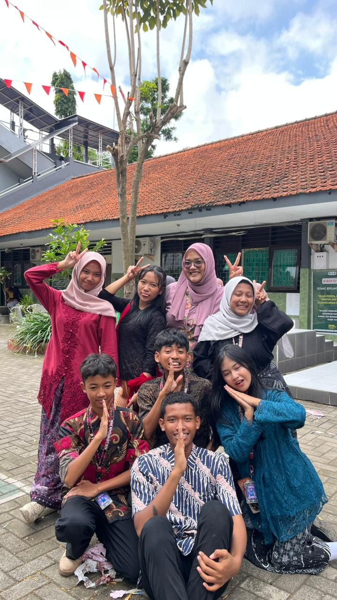
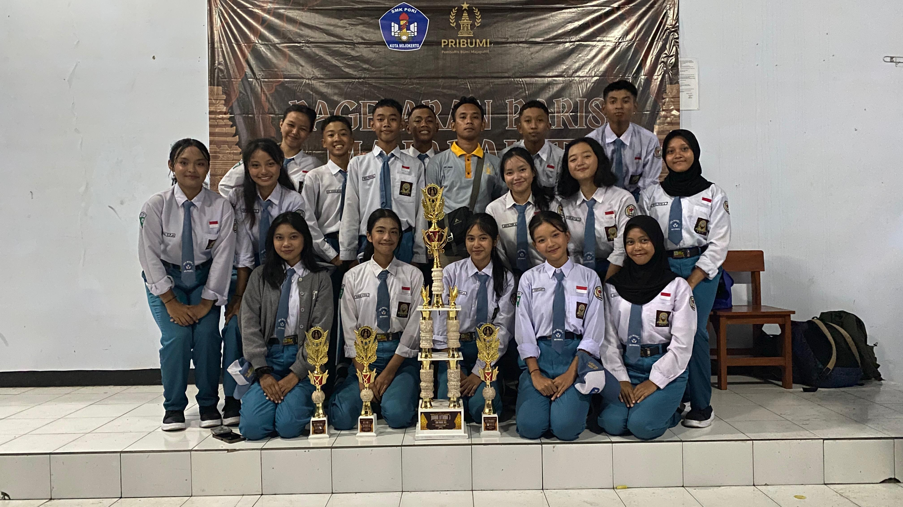
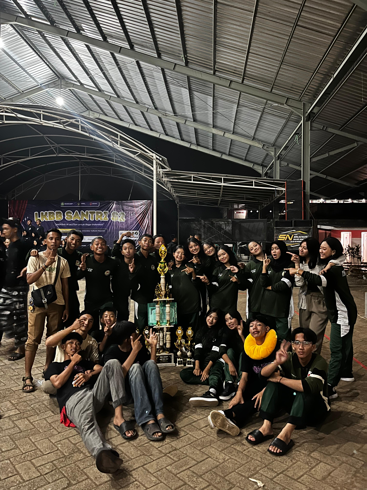
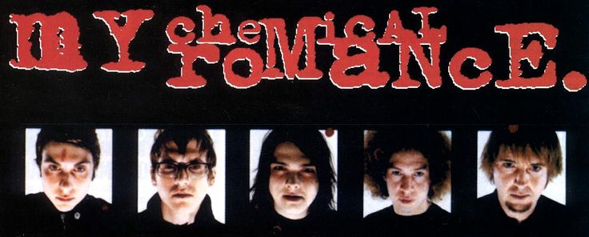

Muhammad Razel Sabitul Azmi
Basic Progamer SMA Negeri 2 Mojokerto
Portofolio ini menampilkan beberapa project dan perkembangan saya dalam belajar progaming web
Saya adalah siswa aktif dari SMA Negeri 2 Mojokerto, saya awal belajar dan tertarik tantang coding waktu masih di bangku Sekolah Dasar, saya dulu memainkan suatu game Roleplay di server buatan seseorang, dan saya berfikir bahwa buat server itu bagus juga, karena bisa menghasilkan uang dari donasi pemain yang ingin membantu server.
Akhirnya aku memutuskan belajar membuat server dengan otodidak, dan mengdalkan Youtube, denggan bermodalkan uang seadanya hanya untuk membeli RDP(Remote Desktop Private), akhirnya saya berhasil membuat server Roleplay saya, yang dimainkan sekitar 50 Player, tetapi dikarenakan hanya memiliki budget yang minim, dan tidak ada donasi pemain yang seusia apa yang saya pikirkan, dengan terpaksa saya menutup server saya.
Disitulah saya belajar beberapa hal yang di butuhkan progaming, seperti Database di Mysql(XAMPP),C++.Tidak lama dari situ saya juga belajar melewati Youtube kembali di Channel Kajew Developer, tentang membuat game di Unity, tetapi sayang disitu saya terkendala oleh device laptop yang tidak mumpuni dengan spek di bawah rata-rata, alhasil game saya tidak bisa berkembang.
Pada saat jenjang SMA, saya memutuskan kembali belajar bahasa syntax yaitu HTML, dan CSS, serta tidak lupa yaitu Java Script dikarenakan itu adalah element dasar pembuatan web, dengan bermodalkan materi di Youtube Kembali
Saya juga memiliki Kontribusi, dan kemampuan di bidang lain, yaitu dalam bidang organisasi dan ekstrakulikuler sekolah, saat di jenjang Sekolah Menengah Pertengahan, saya aktif di Organisasi Sekolah dan memiliki jabatan Bendahara di bangku kelas 7, dan Ketua saat di bangku kelas 8, Serta mengikuti kegiatan Ekstrakurikuler Paskib(PASSPENDARO)
Saat Jenjang Sekolah Menengah Atas, saya juga masih aktif di organisasi sekolah, dan memiliki jabatan sebagai Anggota MPK di Komisi II, serta aktif dalam Ekstrakurikuler Paskibra (PASBRAMADA).
Hai aku Razel,Aku cukup terbuka nih, jadi mari kita terhubung oleh beberapa kontak yang bisa kalian hubungi, saya selalu terbuka loh oleh tawaran kolaborasi, diskusi, bahkan saling sharing-sharing ilmu loh!
Berikut beberapa pencapaian di bidang akademik dan non akademik, serta project yang pernah saya buat

Saya menjabat sebagai anggota MPK untuk periode 2025-2026 pada bagian komisi 2, di MOSIS BUWITASHAKTI.

Saya mengikuti event LOBB Pribumi dan di event ini saya mendapatkan Juara Utama III

Saya juga mengikuti lomba paskib, dan aktif, contohnya di LKBB SANTRI, saya mendapatkan Juara Utama III, tetapi harus gagal di karenakan suatu kendala, kita melanggar peraturanz mengakibatkan minus poin, pada akhirnya mendapatkan juara HARAPAN I
ini adalah beberapa tulisan blog saya

Ini adalah tugas blog saya di jenjang SMP, saya diberi tugas membuat blog, dan di blog ini saya menginformasikan tentang vokalis band My Chemical Romance yaitu Gerrad Way beserta lirik lagu yang saya suka yaitu I Don't Love You
raselgantengbos@gmail.com
Jawa Timur